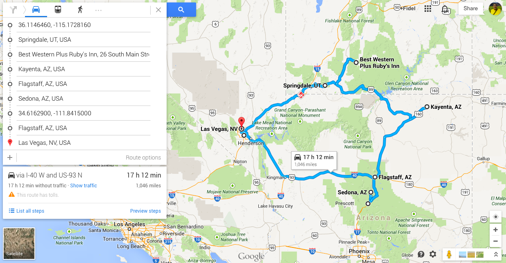

USA - Parques Nacionales 2
29 sept.
Dormir en Las Vegas.
30 sept.
Ir a Springdale, visitar desde el mediodia Zyon Park.
Dormir in Springdale
1 octubre
- Zyon Park e ir a ver la puesta de sol a Bryce Park. Dormir en Bryce Park, una posibilidad es en Rubby’s inn. Ahí durmieron Ruben pero en tienda de campaña.
2 octubre
Excursión por Bryce park, e ir a dormir a Kayenta
3 octubre
Monument Valley, excursión a caballo.
Dormir en Flagstaff u otra vez en Kayenta
4 octubre
Grand Canyon South Rim
Y otra noche en Flagstaff
5 octubre.
Visitar Sedona, Montezuma (o al revés, Montezuma (30 y está listo y Sedona, hace falta mas ratito)
Volver a dormir in Flagstaff.
6 octubre
Vuelta a Las Vegas
noche
7 octubre
San Diego
